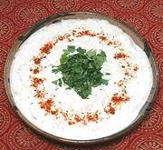

|
Idli in Yogurt SauceIndia, South - Tahir Idli | ||||
| Makes: Effort: Sched: DoAhead: |
2-1/2 cups ** 15 min Most |
A truly delicious reason to hope you have leftover Idlis, and very easy to make too. For details on making Idlis, see our recipe Idli - Rice Cakes. | |||
|
4 1-1/2 ------- 1 1/2 5 1/16 ------- 1/4 1/4 1/3 ------- ar ar |
c --- t t t --- t t t --- |
Idli (1) Yogurt (2) -- Tempering Oil Cumin Seeds Curry Leaves (3) Asafoetida (4) -- Seasoning Chili Powder (5) Pepper black Salt -- Garnish Cilantro Chili Powder (6) |
Make - (20 min)
|
igg_idliyg1 201108 - www.clovegarden.com
©Andrew Grygus - agryg@aaxnet.com - Linking to and
non-commercial use of this page is permitted.